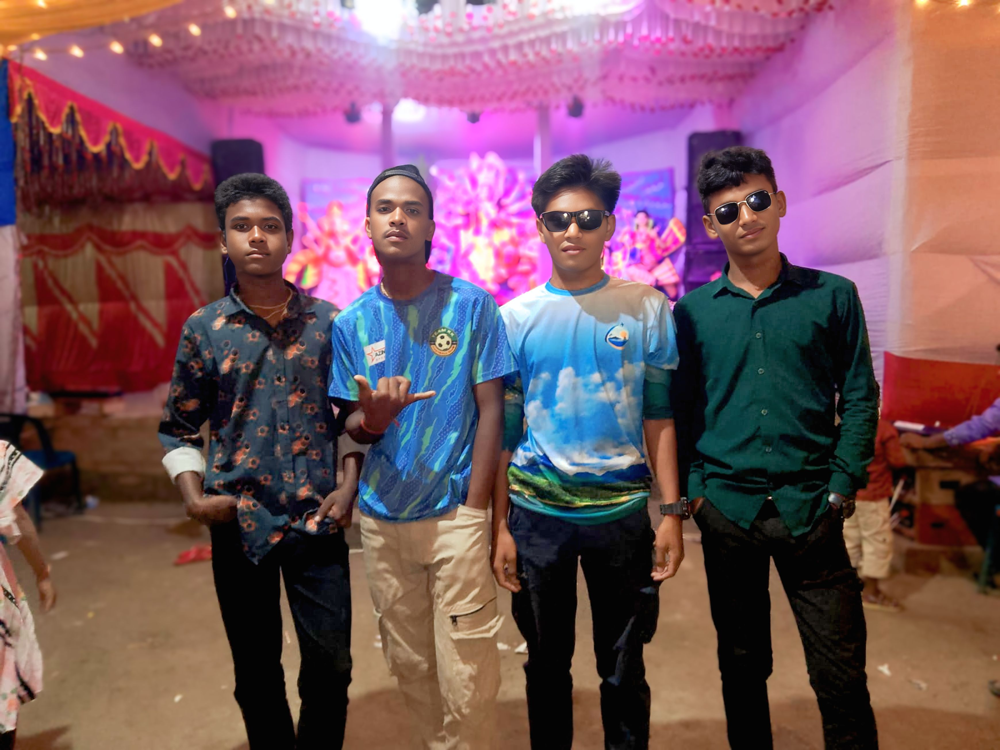

My name is Rahul Dev.
I am interested in working with technology and Artificial Intelligence (AI). My goal is to create new things and find simple, intelligent solutions to problems.
I aim to build digital systems that make people's lives easier, faster, and more efficient.
In the future, I plan to work with advanced AI technologies and create innovative solutions.
— Rahul Dev
